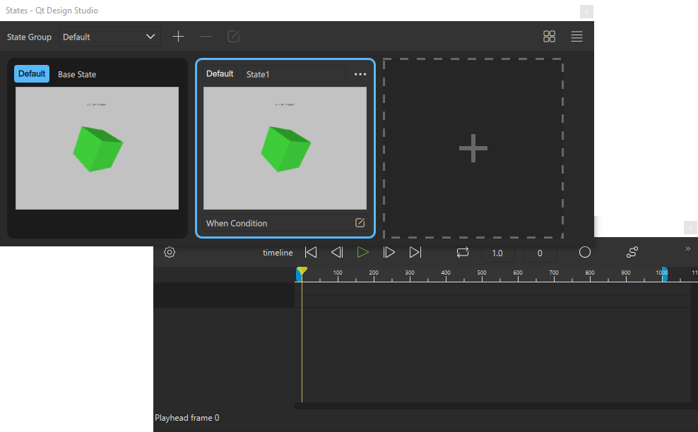

Design Views
Qt Design Studio contains views for designing UIs. To open them, select View > Views. The following images present the views that you are likely to use most often while designing UIs.


You can move the views anywhere on the screen and save them as workspaces, as instructed in Managing Workspaces.
Summary of Design Views
In addition to the summary of design views, the table below includes an MCU column that indicates the views which are fully supported on MCU projects. For more information, see Qt Design Studio Features on MCU Projects.
| View | Purpose | MCU | Read More |
|---|---|---|---|
| 2D | Provides a working area for designing 2D UIs. When you are editing 3D scenes, the 2D view is used as a canvas for the 3D scene projected by the camera. |
| 2D |
| 3D | Provides an editor for files you created using 3D graphics applications and stored in one of the supported formats. | 3D | |
| Material Editor and Browser | In the Material Editor and Material Browser views, you create and manage materials and textures. | Material Editor and Browser | |
| Components | Contains preset components and your own components, that you can use to design you application. |
| Using Components |
| Assets | Contains assets such as images and fonts that you can use in your application. |
| Assets |
| Navigator | Displays the composition of the current component file as a tree structure. A component file can contain references to other components and assets. |
| Navigator |
| Properties | Enables you to modify the properties of the selected component. |
| Specifying Component Properties |
| Connections | Enables you to add functionality to the UI by creating connections between components, signals, and component properties. |
| Working with Connections |
| States | Displays the different states that can be applied to a component. Typically, states describe UI configurations, such as the visibility and behavior of components and the available user actions. |
| Working with States |
| Transitions | Enables you to make movement between states smooth by animating the changes between states. |
| Animating Transitions Between States |
| Translations | Provides functionality to add multi-language support to your project. | Translations | |
| Timeline | Provides a timeline and keyframe based editor for animating the properties of components. |
| Creating Timeline Animations |
| Curves | Enables you to view and modify the whole animation curve by inserting keyframes to the curve and dragging them and the point handlers to modify the curve. | Editing Animation Curves | |
| Code | Provides a code editor for viewing and modifying the code generated by the visual editors. |
| Writing Code |
| Projects | Shows a list of open projects and the files they contain. |
| Projects |
| File System | Shows all files in the currently selected directory. |
| File System |
| Open Documents | Shows currently open files. |
| Open Documents |
| Content Library | The Content Library view contains material, texture, and environment bundles with assets that you can use in your project. | Content Library | |
| Texture Editor | In the Texture Editor view, you create and manage textures. | Texture Editor | |
| Effect Composer | Use Effect Composer to compose custom effects. | Effect Composer |

Summary of Main Toolbar Actions
The top level toolbar in the Design mode contains shortcuts to widely used actions.
| Button/Field | Action | Keyboard Shortcut | Read More |
|---|---|---|---|
| Home: opens the welcome page. | |||
 | Play: runs the application. | ||
| Live Preview | Shows a preview of the current file or the entire UI. The changes you make to the UI are instantly visible to you in the preview. | Alt+P (Opt+P on macOS) | Validating with Target Hardware |
| Currently open file | Displays the location and filename of the currently open file. You can select another file in the list of open files to view it in the 2D and Navigator views. | Open Documents | |
 | Go Back: moves a step backwards in your location history. That is, returns the focus to the last location in the last file it was on. | Alt+< (Opt+Cmd+< on macOS) | |
 | Go Forward: moves a step forward in your location history. | Alt+> (Opt+Cmd+> on macOS) | |
 | Close Document: closes the current file. | Ctrl+W (Cmd+W on macOS) | |
| Creates a custom component from the selected item. | Creating Custom Components | ||
| Edits the selected custom component. | Creating Custom Components | ||
| Workspace | Displays the currently selected workspace. To switch to another workspace, select it in the list. | Managing Workspaces | |
/  | Toggles the views to locked or movable in Qt Design Studio. | Managing Workspaces | |
| Share | Shares the application online using Qt Design Viewer. | Sharing Applications Online |